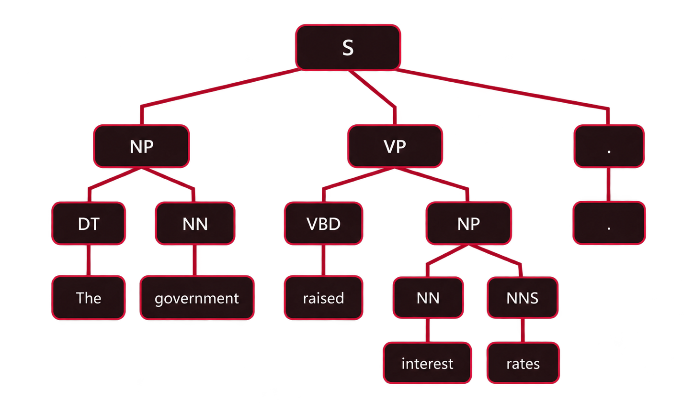
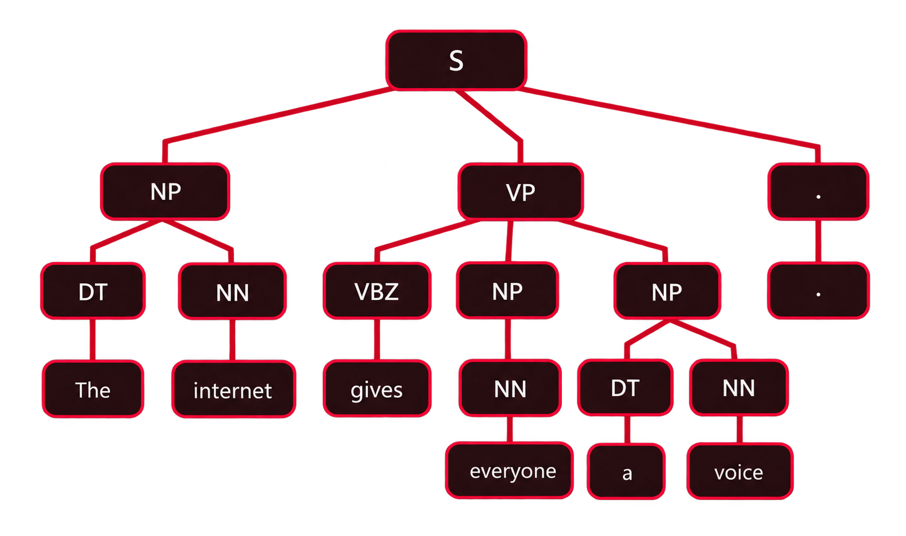
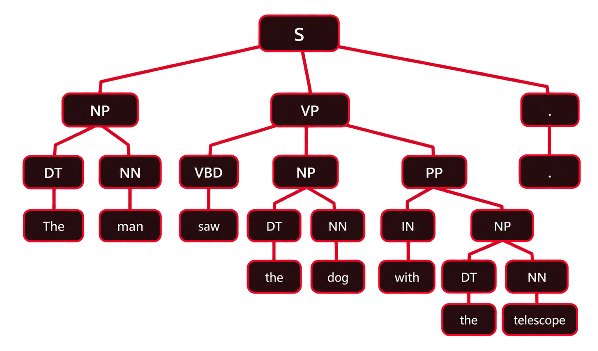
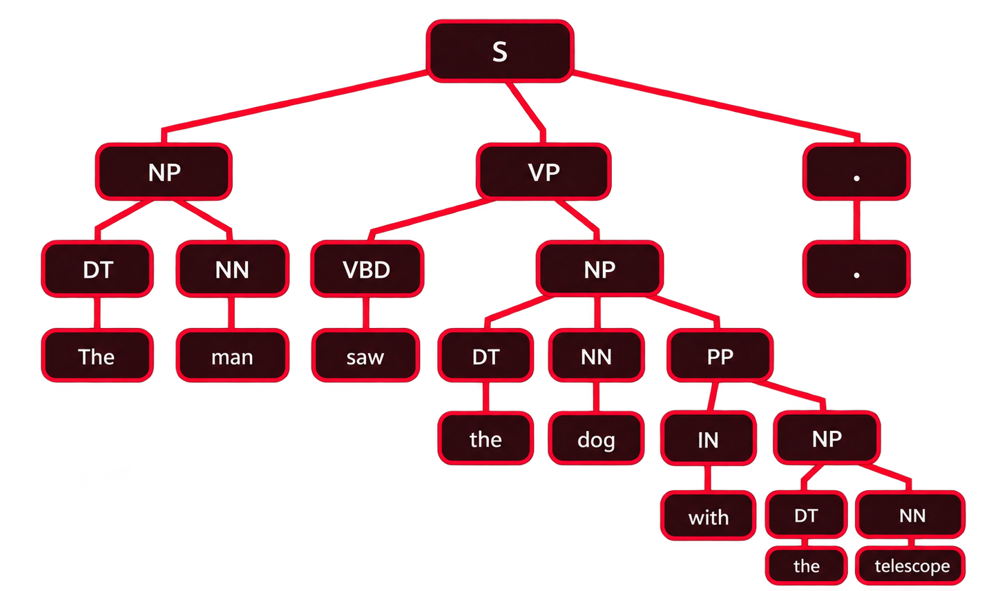

This activity explores constituency-based parsing, a natural language processing technique used to represent the grammatical structure of sentences through hierarchical relationships between words and phrases. It involves constructing parse trees for three sentences, demonstrating subject-verb-object structures, ditransitive constructions and structural ambiguity arising from alternative prepositional phrase attachments.
The completed parse trees, explanations of their grammatical structures, critical analysis and reflection are documented in this section of the e-Portfolio.
The activity addresses the following learning outcomes.
The government raised interest rates.
This sentence follows a subject-verb-object structure and can be represented using a constituency-based parse tree. The sentence (S) consists of a subject noun phrase (NP) and a verb phrase (VP), with the final punctuation represented separately. The subject identifies the entity performing the action, while the verb phrase describes the action and its direct object.
S
├── NP
│ ├── DT → The
│ └── NN → government
├── VP
│ ├── VBD → raised
│ └── NP
│ ├── NN → interest
│ └── NNS → rates
└── . → .

The initial noun phrase NP contains the determiner DT, represented by "The", and the singular noun NN, represented by "government". Together, these form the grammatical subject. The verb phrase VP contains the past-tense verb VBD, represented by "raised", followed by a second noun phrase functioning as its direct object. Within this object, "interest" functions as a nominal modifier and "rates" is the plural head noun, labelled NNS.
The hierarchical structure demonstrates how words combine into meaningful grammatical constituents rather than functioning as independent elements. The subject noun phrase and predicate verb phrase form the principal sentence structure, while the nested noun phrase identifies what was raised. This representation illustrates how constituency-based parsing supports syntactic analysis by identifying phrase boundaries, grammatical categories and relationships within a sentence.
The grammatical categories used in the constituency-based parse tree are defined below.
| Label | Grammatical Category |
|---|---|
| S | Sentence |
| NP | Noun phrase |
| VP | Verb phrase |
| DT | Determiner |
| NN | Singular or mass noun |
| NNS | Plural noun |
| VBD | Past-tense verb |
The internet gives everyone a voice.
This sentence contains a ditransitive verb construction in which the verb "gives" takes two objects. The sentence (S) consists of a subject noun phrase (NP) and a verb phrase (VP). The subject identifies the entity performing the action, while the verb phrase contains a present-tense verb, an indirect object representing the recipient and a direct object representing what is given. The constituency-based parse tree illustrates how these elements combine within a hierarchical grammatical structure.
S
├── NP
│ ├── DT → The
│ └── NN → internet
├── VP
│ ├── VBZ → gives
│ ├── NP
│ │ └── NN → everyone
│ └── NP
│ ├── DT → a
│ └── NN → voice
└── . → .

The subject noun phrase NP contains the determiner DT, represented by "The", and the singular noun NN, represented by "internet". The verb phrase VP begins with VBZ, identifying "gives" as a third-person singular present-tense verb. Two noun phrases follow the verb. The first contains the indefinite pronoun "everyone", labelled NN under the chosen Penn Treebank-style representation, and functions as the indirect object or recipient of the action. The second contains the determiner "a" and the singular noun "voice", forming the direct object. Although "everyone" refers collectively to multiple people, it is grammatically singular.
The hierarchical structure demonstrates how constituency-based parsing represents relationships between the subject, verb and two objects. Unlike the first sentence, which contains one direct object, this construction includes two noun phrase constituents within the verb phrase. Distinguishing the indirect object from the direct object is important for interpreting who receives something and what is being given. In natural language processing, recognising these grammatical relationships provides a foundation for identifying participants and their roles within expressed events.
The additional grammatical category introduced in this parse tree is defined below.
| Label | Grammatical Category |
|---|---|
| VBZ | Third-person singular present-tense verb |
The man saw the dog with the telescope.
This sentence demonstrates structural ambiguity because the prepositional phrase "with the telescope" can attach to two different constituents, producing distinct interpretations. In the first interpretation, the telescope is the instrument used by the man to see the dog. In the second, the telescope is associated with the dog being observed. Although the sequence of words remains unchanged, the hierarchical relationships between constituents differ. Constituency-based parsing represents this ambiguity through alternative tree structures.
In this interpretation, the prepositional phrase PP attaches to the verb phrase VP, indicating that the man used the telescope to see the dog. The prepositional phrase functions as an instrumental modifier of the action rather than describing the dog.
S
├── NP
│ ├── DT → The
│ └── NN → man
├── VP
│ ├── VBD → saw
│ ├── NP
│ │ ├── DT → the
│ │ └── NN → dog
│ └── PP
│ ├── IN → with
│ └── NP
│ ├── DT → the
│ └── NN → telescope
└── . → .

The sentence consists of a subject noun phrase and a verb phrase containing the past-tense verb "saw", the direct object "the dog" and a prepositional phrase. Within the prepositional phrase, "with" is classified as IN and introduces the noun phrase "the telescope". Because the prepositional phrase is a constituent of the verb phrase rather than the object noun phrase, it modifies the seeing event. This structure supports the interpretation that the man used the telescope as an instrument.
In the alternative interpretation, the prepositional phrase attaches to the object noun phrase, indicating that the dog is associated with the telescope. The prepositional phrase therefore describes the noun phrase rather than modifying the action of seeing.
S
├── NP
│ ├── DT → The
│ └── NN → man
├── VP
│ ├── VBD → saw
│ └── NP
│ ├── DT → the
│ ├── NN → dog
│ └── PP
│ ├── IN → with
│ └── NP
│ ├── DT → the
│ └── NN → telescope
└── . → .

In this structure, the verb phrase contains the verb "saw" followed by a single complex noun phrase functioning as its direct object. The noun phrase contains the determiner "the", the head noun "dog" and the prepositional phrase "with the telescope". Because the prepositional phrase is embedded within the object noun phrase, it modifies "dog" rather than the seeing event. The resulting interpretation is that the man saw a dog associated with a telescope, without specifying whether the man used an instrument to observe it.
The two trees demonstrate that identical words and grammatical categories can produce different meanings when their constituent relationships change. A constituency parser can represent both structures, but selecting the intended interpretation requires additional contextual or semantic information. This illustrates an important challenge in natural language processing, where grammatical analysis alone may not be sufficient to resolve ambiguity.
The additional grammatical categories introduced in these parse trees are defined below.
| Label | Grammatical Category |
|---|---|
| PP | Prepositional phrase |
| IN | Preposition or subordinating conjunction, representing "with" in this sentence |
The three constituency-based parse trees demonstrate how grammatical structures can be represented through hierarchical relationships between phrases and individual words. The first sentence illustrates a transitive construction, while the second demonstrates a ditransitive verb phrase containing both indirect and direct objects. These representations make syntactic relationships explicit and provide a foundation for computational language analysis. Klein and Manning (2003) demonstrate that carefully designed grammatical representations can support accurate statistical parsing, highlighting the importance of syntactic structure in natural language processing.
The third sentence presents a more significant challenge because the prepositional phrase "with the telescope" can modify either the verb phrase or the object noun phrase. Both interpretations are grammatically valid but produce different meanings. Hindle and Rooth (1993) examine structural ambiguity and demonstrate how lexical relationships can support the resolution of alternative syntactic interpretations. This illustrates a fundamental limitation of constituency-based parsing, as grammatical structure alone may not establish the intended meaning without additional linguistic context.
Constructing the trees reinforced my understanding of how grammatical categories combine to form larger constituents. The main challenge was distinguishing the direct and indirect objects in the second sentence and identifying the alternative attachment positions of the prepositional phrase in the third. Comparing the hierarchical structures helped clarify these relationships and demonstrated why consistent grammatical labelling is essential. Collins (2003) explores statistical parsing models that incorporate lexical and structural information, illustrating how computational approaches can extend grammatical analysis beyond manually constructed trees.
Overall, the activity demonstrated both the value and limitations of constituency-based parsing. Its strengths include transparent grammatical representations and the identification of phrase boundaries, while its limitations concern ambiguity, dependence on grammatical assumptions and the need for contextual interpretation. Future improvements could involve probabilistic parsing and semantic analysis to distinguish competing interpretations more effectively. These techniques are relevant to intelligent systems that must interpret natural language instructions, questions and user intentions reliably.
Collins, M. (2003) 'Head-driven statistical models for natural language parsing', Computational Linguistics, 29(4), pp. 589–637. Available at https://aclanthology.org/J03-4003/ (Accessed 13 October 2026).
Hindle, D. and Rooth, M. (1993) 'Structural ambiguity and lexical relations', Computational Linguistics, 19(1), pp. 103–120. Available at https://aclanthology.org/J93-1005/ (Accessed 13 October 2026).
Klein, D. and Manning, C.D. (2003) 'Accurate unlexicalized parsing', Proceedings of the 41st Annual Meeting of the Association for Computational Linguistics, pp. 423–430. Available at https://aclanthology.org/P03-1054/ (Accessed 13 October 2026).